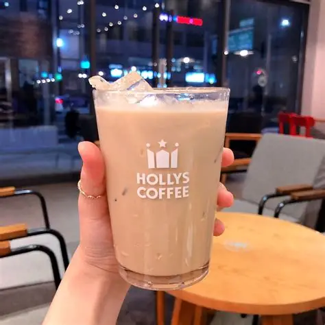

カフェ
| カフェ名 |
A Twosome Place

|
HOLLYS
|
Berce Coffee
|
Brooklyn Coffee

|
| 全国店舗数 | 1640+ (2023) | 570+ | 1 | 5 (直営店) 500+ (パートナー) |
| 創業 | 2002年 ソウル・新村 | 1998年 ソウル・江南 | 1999年 | 2017年 |
| おすすめ商品 | アイスボックス Ice Box |
アイスラテ Iced Latte  |
イタリアのコーヒー豆を使用した飲み物 |
厳選したコーヒー豆 |
| オフィシャルサイト | A Twosome Place | HOLLYS | Berce Coffee | Brooklyn Coffee |
韓国グルメ
| 名前 | 写真 | 説明 |
| スンデグク 순대국 | ・韓国の伝統的なスープ ・スンデ - 豚の腸詰め |
|
| カムジャタン 감자탕 | ・ピリ辛豚骨スープ ・カムジャ=じゃがいも ・骨付きの豚肉が特徴 |
|
| サムギョプサル 삼겹살 | ・豚の三枚肉 ・サンチュに包んで食べる |
|
| カルグクス 칼국수 | ・手打ち麺のスープ料理 ・ラーメンに似ている |
|
| フライドチキン 치킨 | ・カリカリ ・甘辛いヤンニョムソース |
|
| ナッコプセ 낙곱새 | ・ナクジ、コプチャン、セウの略 ・たこ、牛の小腸、えびを一緒に炒めた料理 |
|
| トースト 토스트 | ・ハム、卵、野菜入りのサンドイッチ | |
| おでん 오뎅 | ・魚のすり身をスープに入れて煮たもの | |
| ホットク | ・もちもちパンケーキ ・中身はシナモンやナッツ、野菜も |